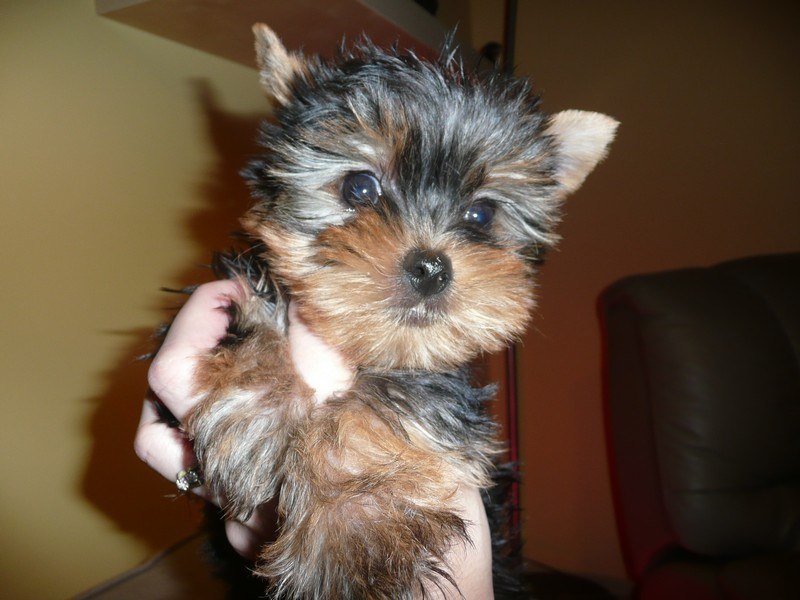
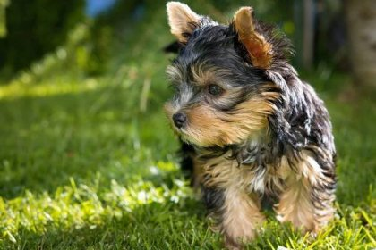
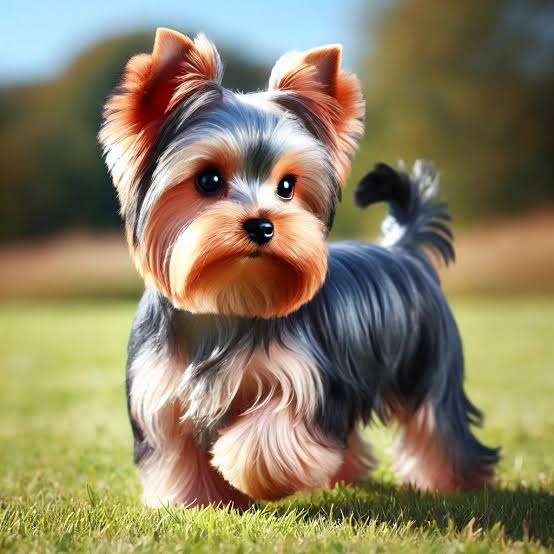
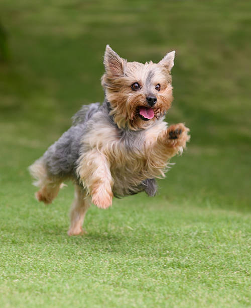

které pochází ze Spojeného království, kde bylo využíváno k lovu hlodavců.
Dnes je jorkšírský teriér využíván především jako společenský pes (domácí mazlíček),
stále si však zachoval původní povahu. Je to ostražitý, temperamentní a inteligentní teriér,
kterého je typickým vnějším znakem dlouhá, hebká a lesklá srst.
V 11. století platil pro poddané v Anglii zákaz lovu a dokonce i zákaz chovu velkých loveckých psů.
Z toho důvodu vyšlechtili skotští horníci z oblasti West Riding v hrabství Yorkshire malého psíka,
který uměl chytat krysy a potkany a příležitostně lovil i králíka.
řípadně vady kloubů či srdce nebo jiných orgánů a částí těla.
Psi a feny použití v chovu nesmí být agresivní ani bázliví, závažné odchylky od standardu jsou z chovu vylučující.
Fena by měla být vždy mírně mohutnější a těžší než pes.
živý, ostražitý, energický a inteligentní. Může být jak společenským psem, tak odvážným strážcem, který se nezalekne ani větších psů či cizích osob.
každý teriér ovšem vyžaduje důsledné a trpělivé vedení.
Při setkání s ostatními psy má malý jorkšír často tendenci se přeceňovat.
Obvykle se tento psí trpaslík považuje za většího, než ve skutečnosti je.
Nemá problém postavit se i daleko větším psům jako je doga či německý ovčák.
